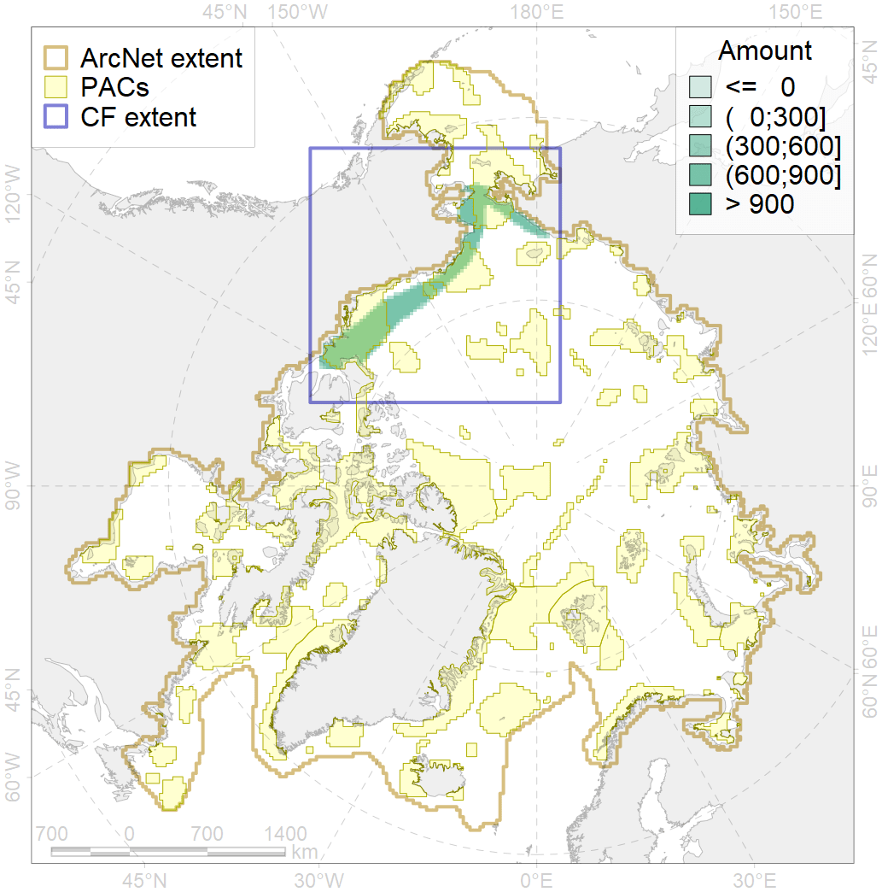
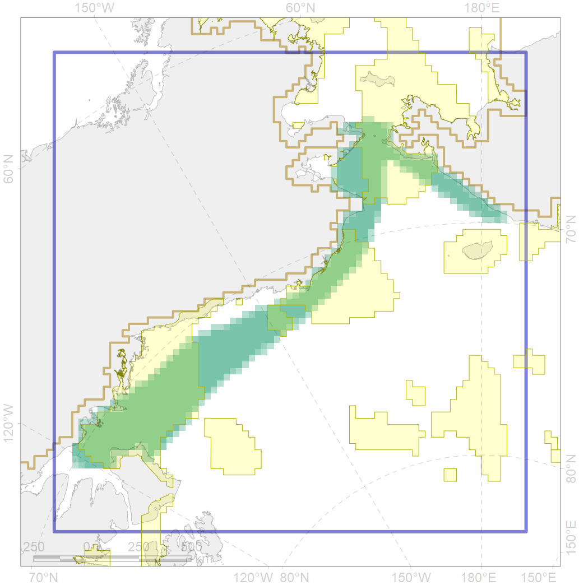

5106

| CF code | 5106 |
| CF name | Bowhead whale of the Bering-Chukchi-Beaufort population spring distribution |
| Time Period | 2006–2011 |
| Source(s) | Quakenbush et al 2012 |
| Seasonality | April-May |
| Depth Horizon | 0-250 |
| Methodology | Satellite tagging |
| Use Restrictions | |
| Author Name | Filatova |
| Notes | |
| Scenario’s Target | 0.576 |
| Target Achievement | 0.582 (Scenario: 101.1%) |
| PAC | Share of the Total Amount within the PAC | Share of the Target Achievement for the ArcNet | PAC’s Contribution to the Target Achievement |
|---|---|---|---|
| 5 | 12.7%13.1% | 19.6%19.9% | 19.4%19.7% |
| 6 | 0.0%0.1% | 0.0%0.1% | 0.0%0.1% |
| 60 | 12.6%13.3% | 17.1%17.7% | 16.9%17.5% |
| 62 | 35.7%35.8% | 56.8%57.1% | 56.2%56.4% |
| inner | 61.0%62.3% | 93.6%94.8% | 92.6%93.7% |
| outer | 39.0%43.7% | 7.5%12.6% | 7.4%12.5% |
| † supplement values are for area consistence whereas principal values are for Accenter compatible gridded stats |